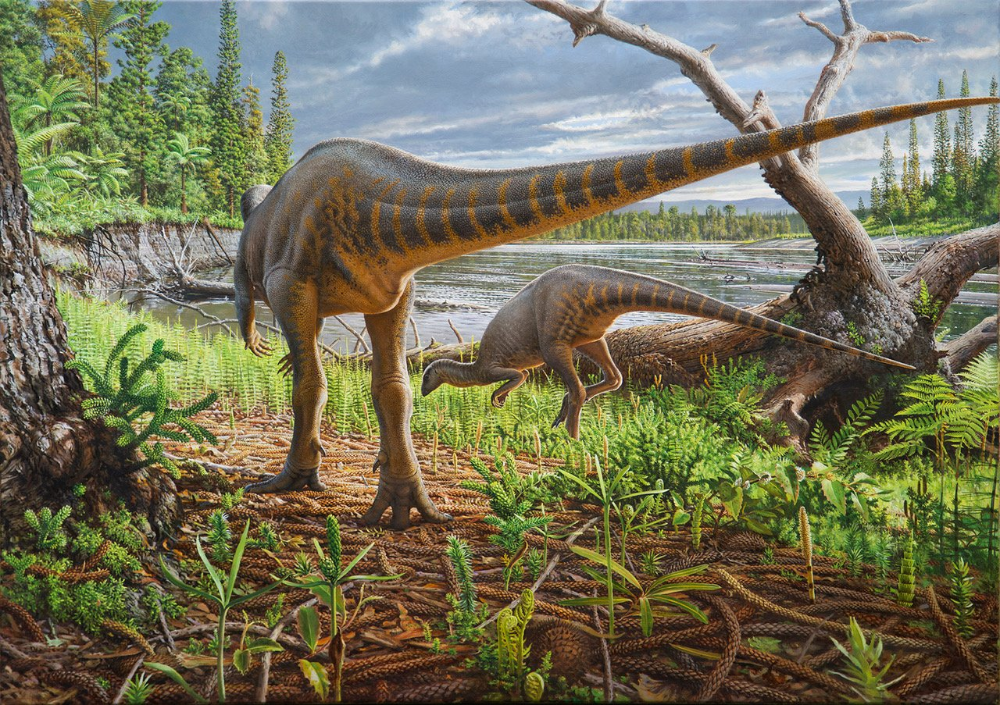
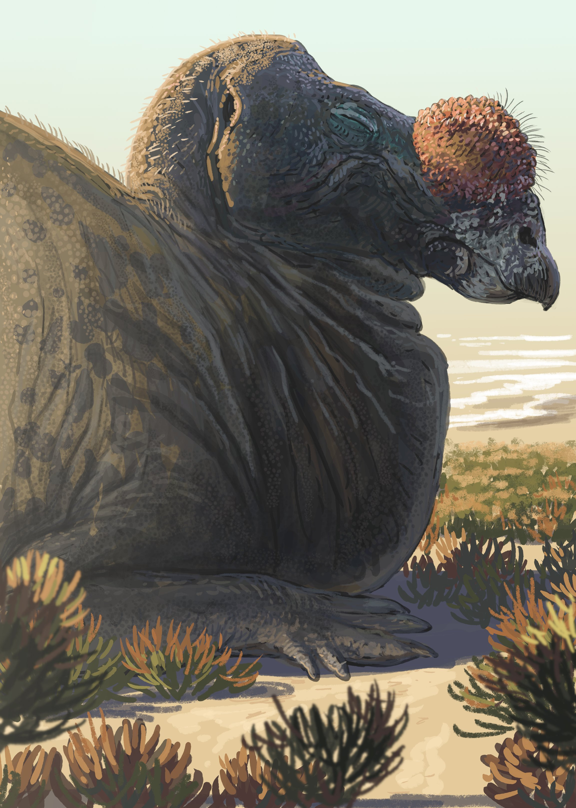
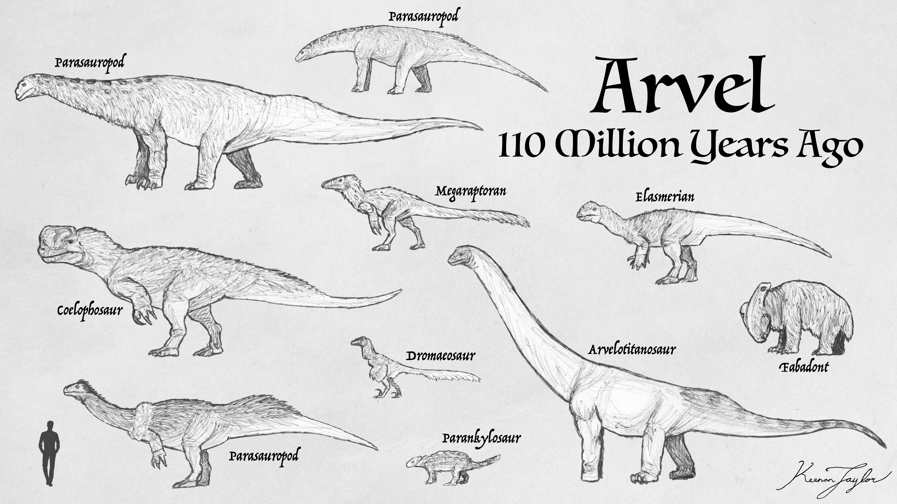
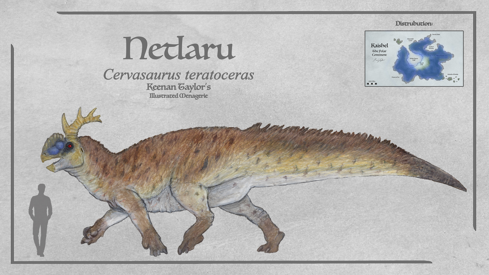
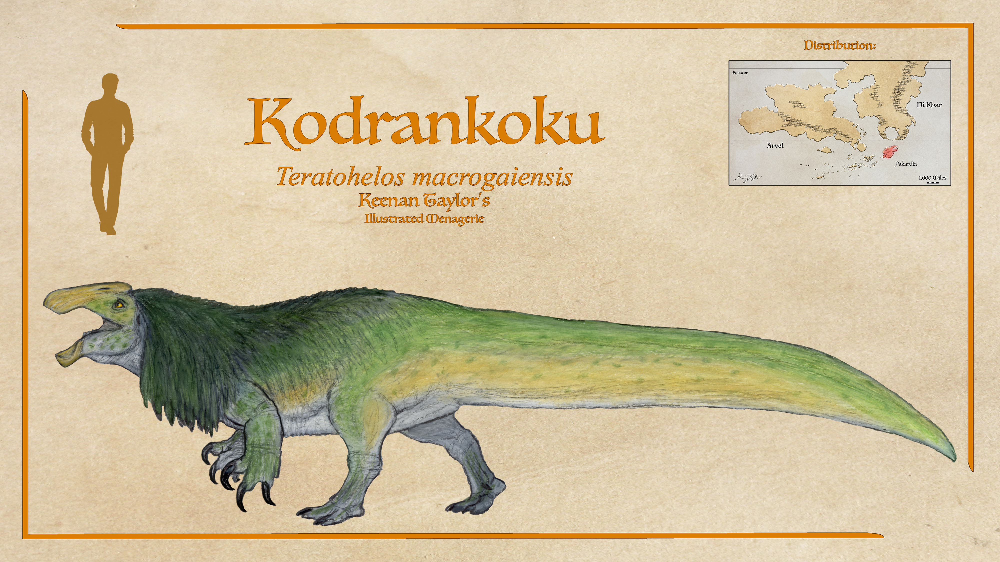
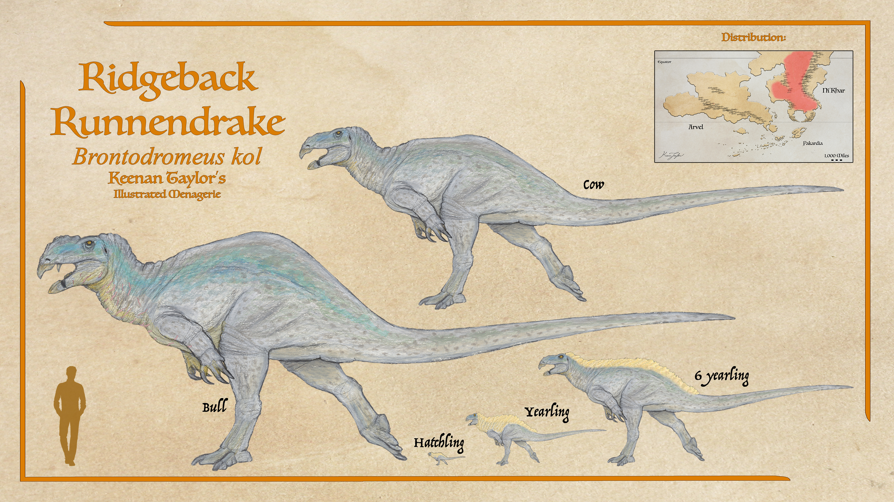

Scientific Classification
| Kingdom | Animalia | Animalia | Animalia |
|---|---|---|---|
| Phylum | Chordata | Animalia | Animalia |
| Class | Mammalia | Animalia | Animalia |
| Infraclass | Placentalia | Animalia | Animalia |
| Order | Carnivora | Animalia | Animalia |
| Suborder | Feliformia | Animalia | Animalia |
| Family | Felidae | Animalia | Animalia |
Taxonomic note: This is a simplified reference classification. The placement of individual Kaimeran lineages should be documented separately where their evolutionary relationships remain uncertain.
01 · INTRODUCTION
Overview

Elasmaria constitutes a distinctive radiation of basal ornithopod dinosaurs whose evolutionary history in Kaimere has produced an extraordinary diversity of body forms, locomotor strategies, and ecological specializations. Although elasmarians retain the fundamental anatomical characteristics of their Earth-derived ancestors, their subsequent evolution has been profoundly influenced by the ecological, geographical, and evolutionary circumstances of Kaimere. The result is a clade whose representatives occupy habitats ranging from humid montane forests and bamboo-covered escarpments to expansive grasslands, coastal wetlands, and marine environments.
The ancestral elasmarian body plan was characterized by relatively gracile proportions, predominantly herbivorous feeding habits, and a pronounced emphasis on terrestrial locomotion. Most early representatives were small to medium-sized animals, with many species attaining approximately the dimensions of a domestic cat. Their elongated hindlimbs, comparatively lightweight skeletons, and flexible vertebral columns suited them to rapid movement through heterogeneous environments. Their feeding ecology was correspondingly generalized, encompassing browsing, low-level grazing, and the exploitation of vegetation growing along forest margins, riverine woodland, and disturbed habitats. This ecological flexibility would prove fundamental to their subsequent diversification.
The skeletal architecture of elasmarians reflects the interaction between locomotor efficiency and structural resilience. Their long bones possess comparatively thin cortical walls surrounding extensive internal trabecular networks, reducing skeletal mass without substantially compromising mechanical strength. The vertebral column is particularly notable for its flexibility, especially within the cervical and caudal regions. Elongated prezygapophyseal articulations stabilize the trunk during locomotion while permitting substantial lateral movement, allowing muscular forces generated by the hindlimbs to be transmitted efficiently through the body. The caudal musculature consequently became an important component of their locomotor apparatus, providing propulsion, stabilization, and, in specialized lineages, substantial contributions to acceleration.
The thoracic skeleton possesses unusual mineralized intercostal plates or plate-like elements associated with the rib cage. These structures have been interpreted as possible homologues or functional analogues of the uncinate processes found in living archosaurs, although their precise evolutionary relationships and physiological functions remain uncertain. They may have contributed to the mechanical reinforcement of the thorax, respiratory efficiency, or both. Their presence suggests that the elasmarian trunk combined substantial rigidity with a relatively lightweight construction.
Histological evidence indicates that elasmarians were capable of sustained skeletal development, particularly during juvenile growth. Fibrolamellar bone predominates throughout much of the skeleton, suggesting comparatively elevated metabolic activity and sustained osteogenesis. Growth rings are often poorly defined during early ontogeny, indicating prolonged periods of uninterrupted skeletal deposition. Although elasmarians generally grow slowly relative to many similarly sized mammals, their juvenile development can be substantial, and growth trajectories differ considerably among lineages. The jacketed runnendrake, for example, takes approximately five years to reach adult size, while certain large-bodied species exhibit prolonged growth extending across decades.
Elasmaria is distinguished from other basal ornithischian groups by its evolutionary relationship to the broader ornithopod radiation. Although elasmarians and thescelosaurs share numerous superficial similarities associated with their basal ornithischian ancestry, they are not closely related. Current interpretations place elasmarians closer to hadrosaurs and iguanodonts than to Thescelosaurus, emphasizing that similarities between the two groups frequently reflect their generalized ancestral anatomy rather than a particularly close relationship.

The evolutionary history of Elasmaria on Kaimere has been characterized by repeated episodes of ecological specialization and anatomical divergence. The most conspicuous developments include the enhancement of forelimb musculature, the evolution of exceptionally specialized cursorial forms, the development of complex vocal apparatuses among the bagpipe drakes, and the emergence of large-bodied aquatic and semi-aquatic spirit drakes. Other lineages evolved adaptations for climbing, bamboo consumption, extensive social organization, or the exploitation of highly specialized grassland ecosystems.
Despite these modifications, the fundamental elasmarian body plan remains recognizable throughout the radiation. Hindlimb-dominant locomotion, a keratinous beak, an elongated tail, and the retention of comparatively dexterous forelimbs persist across numerous lineages. The extent to which these characteristics have been modified varies considerably, with some groups retaining relatively generalized proportions while others have evolved into anatomically distinctive forms that bear little resemblance to their Earth-derived ancestors.
The history of Elasmaria therefore represents a particularly instructive example of evolutionary diversification following the introduction of an established terrestrial lineage into a complex and geographically dynamic ecosystem. Their subsequent radiation illustrates the importance of ecological opportunity, geographical isolation, environmental change, and interactions with unrelated dinosaurian groups in determining the evolutionary trajectory of Kaimeran fauna.
02 · DEEP TIME
Evolutionary History
The First Cretaceous Harvest

Elasmarians first entered Kaimere during the earliest Cretaceous harvest, between the Aptian and Albian stages, during the Jelralanajag, or Age of Tremor and Travel. Their introduction occurred as part of the broader transfer of Earth-derived organisms into the Known World through the Portal.
The earliest introduced elasmarians were presumably representative of comparatively generalized basal ornithopods. Their small to medium body size, predominantly herbivorous feeding habits, and efficient terrestrial locomotion provided them with a flexible ecological foundation. Nevertheless, their establishment was initially geographically restricted. Elasmarians experienced considerable difficulty establishing viable populations across Kaimere's various continents, and their earliest successful populations became concentrated in Arvel and ancient Kaishel.
The limited distribution of these early populations indicates that their establishment depended upon particular ecological circumstances rather than an immediate capacity to colonize the entirety of Kaimere. Although their generalized feeding habits and relatively modest size reduced certain ecological constraints, the availability of suitable vegetation, nesting environments, and terrestrial habitats presumably remained important determinants of their distribution.
The earliest Kaimeran populations began to diverge from their Earth-derived ancestors as they adapted to their new environments. One of the most consequential developments was the enhancement of the deltopectoral crest, a structure associated with the attachment of pectoral musculature. Earth elasmarians are generally characterized by comparatively limited development of this structure, whereas Kaimeran representatives developed increasingly prominent attachment sites for the musculature of the forelimbs.
The significance of this modification varied among later lineages. In some, it contributed to enhanced forelimb dexterity and manipulation; in others, it became associated with combat, climbing, and the development of powerful forelimbs. The resulting anatomical divergence became a recurring characteristic of Kaimeran Elasmaria.
The Tyrant Dynasty and the Intensification of Elasmarian Musculature
During the Tyrant Dynasty, elasmarian anatomy continued to reflect the distinctive evolutionary pressures of Kaimere. The development of enlarged deltopectoral crests and increasingly powerful pectoral musculature became particularly conspicuous among several lineages. This period is remembered for the extraordinary development of chest musculature in Kaimeran elasmarians. The contrast with Earth elasmarians, which generally lack comparable deltopectoral enhancement, illustrates the extent to which their introduced ancestors diverged under Kaimeran conditions.
Although the underlying evolutionary mechanisms remain uncertain, the enlargement of forelimb musculature appears to have become a recurring feature of several Kaimeran radiations. In larger and more heavily built forms, the forelimbs became increasingly important in combat, defense, and manipulation of the environment. Trekosaurs represent the most dramatic expression of this trend. Their forelimbs evolved into powerful weapons, while their enlarged dorsal spines supported the musculature required for striking and rearing during combat.
The resulting anatomy combined the locomotor efficiency of a cursorial herbivore with the physical capabilities of a formidable combatant. The bagpipe drakes, despite their comparatively small size, also retain conspicuous forelimb and chest musculature. Their derived respiratory and display anatomy produces an appearance of exaggerated pectoral development, making them a particularly recognizable manifestation of the distinctive Kaimeran elasmarian phenotype.
The development of powerful forelimbs therefore represents a recurring evolutionary theme throughout the group, although the anatomical structures involved differ substantially among lineages.
Early Establishment in Arvel and Ancient Kaishel
Following their introduction, elasmarians established persistent populations in Arvel and ancient Kaishel. These regions became the principal centers of early elasmarian diversification, although their subsequent evolutionary trajectories differed substantially.
Arvel proved particularly important in the development of ecological diversity. Its extensive forests, upland valleys, hollers, wetlands, and open habitats provided numerous opportunities for specialization. Elasmarians retained their ancestral capacity for efficient terrestrial locomotion while increasingly adapting to particular forms of vegetation and terrain. The earliest diversified lineages continued to exhibit the generalized elasmarian body plan. Small-bodied browsers and opportunistic herbivores remained abundant, exploiting forest understory, river margins, and disturbed environments. Their comparatively lightweight skeletons and flexible vertebral columns were particularly advantageous in habitats where maneuverability and the ability to negotiate uneven terrain were more important than sustained speed across open ground.
Kaishel, meanwhile, became an important center of the evolution of larger-bodied elasmarians. The presence of exceptionally large elasmarian populations there for many tens of millions of years distinguishes its evolutionary history from that of the Known World. Whereas elasmarians in Arvel and elsewhere remained predominantly small to medium-sized for much of their history, Kaishel developed lineages capable of attaining substantially greater body masses.
The early divergence of these populations established the geographical and ecological foundations for the subsequent radiation of Elasmaria. Arvel would become the principal center of diversity for many of the group's most recognizable terrestrial lineages, while Kaishel developed an independent evolutionary trajectory characterized by large-bodied herbivores, complex social organization, and adaptations to environments beyond the ecological reach of many Known World species.
The First Major Kaishel Radiation and the Evolution of Gigantism
Kaishel's elasmarian populations underwent a substantial evolutionary transformation as the continent's ecological conditions permitted the development of unusually large herbivores. The origins of this gigantism remain incompletely understood, although it appears to have been associated with a combination of ecological opportunity, geographical isolation, and the availability of large-herbivore niches.
The history of Kaishel was not one of uninterrupted ecological stability. Its fauna experienced major extinction events, including one associated with the separation of Pakardia and other tectonic disturbances. These events eliminated several large-bodied animals and substantially altered the structure of the continent's ecosystems.
Following these disruptions, elasmarians underwent a major increase in body size. Their gigantism became established approximately forty million years ago, substantially earlier than the appearance of comparably large elasmarians and thescelosaurs in the Known World.
The prolonged evolutionary interval following this transition allowed the Kaishel radiation to develop independently for tens of millions of years. The absence of the Portal from these ecological transformations meant that the recovery of Kaishel's ecosystems proceeded organically, without the periodic introduction of Earth-derived fauna that characterized the Known World.

One of the principal consequences was the emergence of the netlaru, a large-bodied and socially complex elasmarian that became one of the most prominent animals of Kaishel. Unlike most elasmarians and thescelosaurs of the Known World, the netlaru is quadrupedal. This posture has historically contributed to misconceptions regarding its phylogenetic relationships, although its anatomical characteristics and broader evolutionary history support its placement within Elasmaria.
The netlaru's quadrupedalism has generally been interpreted as a consequence of prolonged gigantism within its lineage. Whereas elasmarians of the Known World only began exceeding approximately one hundred kilograms following the Dynastic Extinction, Kaishel's elasmarians had already occupied large-herbivore niches for many tens of millions of years. The eventual evolution of a quadrupedal gait may therefore represent an adaptation to sustained increases in body mass, although the possibility that other large-bodied Known World elasmarians will eventually evolve similar locomotor strategies remains speculative.
Tectonic Dispersal and the Expansion Beyond the Original Centers
As tectonic movement altered the geographical relationships among Kaimere's continents, elasmarians gradually expanded beyond their original centers of establishment. Populations that had initially remained concentrated in Arvel and Kaishel became capable of dispersing into additional regions, including Pakardia.
This geographical expansion did not eliminate the importance of the original centers of diversity. Arvel, Pakardia, and Kaishel continued to support the most substantial elasmarian populations, while other regions remained comparatively less important in the group's overall distribution.

The expansion into Pakardia introduced elasmarians into environments characterized by substantial climatic and geographical variation. The continent's highlands, temperate forests, and wetland systems subsequently supported distinctive populations. Among the least understood of these is the kodrankoku, Teratohelos macrogaiensis, inhabiting Pakardia's highlands. The kodrankoku was initially interpreted as a relative of the jugashen because of its substantial body size and the development of a prominent mane in males. Subsequent consideration of its morphology, however, suggests that these similarities may represent convergence rather than close relationship. Its possible affinity with the southern Khalin island lineage represented by the ijetsumaq remains uncertain. The kodrankoku differs from the relatively tall jugashen in its low-slung body. It is reportedly the most herbivorous member of the spirit-drake radiation, feeding primarily upon floating mats of horsetails. These plants are poorly exploited by many other wetland herbivores because their silica content is abrasive to teeth, while certain competing animals are poorly adapted to feeding in water. Consequently, the kodrankoku benefits from a comparatively abundant and underexploited food source.
Although occasional reports describe kodrankoku feeding upon fish or small mammals, such behavior is generally interpreted as opportunistic feeding during drought or nutritional deficiency. Adults attain approximately six to eight tons and are considered largely immune to predation. Weochetu'ka occasionally hunt them, although Pakardia's apex predator, the oritaku, is poorly adapted to pursuing prey into water and generally does so only under exceptional circumstances.
Tectonic Dispersal and the Expansion Beyond the Original Centers
While continental dispersal proceeded, Arvel continued to support the greatest diversity of generalized and specialized terrestrial elasmarians. Its forests, hollers, upland valleys, and open habitats produced a variety of lineages whose anatomical differences reflect the particular ecological challenges of their environments.
Among the more generalized terrestrial forms were the Cervornis. These animals became particularly abundant in the hollers and upland valleys of eastern Arvel. Their strong legs and flexible ankles favor agility over the extreme cursorial specialization of other runnendrakes. They inhabit upper elevations and steep valleys where many predators struggle to reach and where competition for food is comparatively limited.
Other Arvelith elasmarians evolved greater agility and climbing ability. The grousedrakes, represented by Arundinarphagus and its close relatives, became adapted to the rugged hollers, escarpments, bamboo forests, and moss-covered crags of central Arvel. Their evolutionary trajectory differed substantially from that of the cursorial runnendrakes. Grousedrakes developed shortened but heavily muscled femora, elongated distal limb elements, and highly flexible ankle joints. Their feet possess partially independent toes, enlarged flexor tendons, and widened keratinous pads that distribute weight across irregular surfaces. In some species, an enlarged inner toe functions as a stabilizing hook when traversing steep rock faces or gripping vegetation. Tendon-locking mechanisms permit stable resting positions on slopes without continuous muscular exertion.
The Emergence of Runnendrakes
The runnendrakes originated in the fern prairies of Arvel and subsequently developed into one of the most successful terrestrial elasmarian radiations. Their evolutionary history is characterized by substantial locomotor refinement and the development of increasingly specialized terrestrial body plans.
The defining characteristic of the runnendrake lineage is its locomotor refinement. Unlike generalized Earth ornithischians, whose movement frequently relied upon relatively rigid hindlimb mechanics optimized for short bursts of speed, runnendrakes evolved into highly efficient endurance specialists.
Within the runnendrake radiation, trekosaurs represent one of the most remarkable evolutionary developments in Kaimeran Elasmaria. They evolved into gigantic, athletic herbivores capable of retaining considerable speed and acceleration despite their often enormous body masses.
Whereas large herbivorous dinosaurs on Earth frequently became increasingly graviportal as their size increased, trekosaurids retained pronounced cursorial adaptations. Their bodies became narrow and deep-chested, with elongated distal limbs and immense caudofemoral musculature.
The proximal caudal vertebrae developed into substantial muscle attachment sites, transforming the tail into an important component of the locomotor apparatus. The caudal musculature functions not merely in balancing the body, but also in generating propulsive force and storing elastic energy during locomotion.
The hindlimbs consequently resemble those of large cursorial theropods more than those of many conventional herbivorous dinosaurs. The femur remains relatively short and heavily muscled, while the tibia and metatarsals are elongated, reducing distal limb inertia and facilitating rapid stride cycling.
Specialized tendon complexes running along the ankle and metatarsals probably function as elastic recoil systems comparable to those of large cursorial mammals, enabling sustained high-speed movement across prairie environments.
Trekosaurs also retain unusually powerful forelimbs. Their arms terminate in large recurved claws that are used in combat, defense, and environmental manipulation. Enlarged dorsal spines provide attachment sites for substantial scapular and forelimb musculature, allowing the arms to be held partially erect during locomotion, feeding, and extended during combat.
The enlarged chest and throat musculature, particularly in males, evolved partly in response to these combat strategies. During confrontations, males may rear partially upward and strike downward with their forelimbs, producing movements reminiscent of large flightless predatory birds.
The skull anatomy underwent substantial modification as well. Males possess additional tusk-like projections and fanglike dentition along the jaws, functioning primarily in ritualized combat but secondarily in defense. Their jaw musculature is optimized for repeated tearing motions rather than simple grinding.
The Expansion of Runnendrakes into Kairul and Ni'Khar
Although elasmarians remained predominantly associated with Arvel for much of their history, one particularly successful lineage eventually expanded beyond the continent. The ancestors of the podokorns and other runnendrakes crossed from Arvel into Ni'Khar during a period of continental interexchange. This movement established the geographical foundation for a subsequent expansion into Kairul.
The dispersal of these lineages demonstrates that the cursorial adaptations developed in Arvel were not restricted to the continent's original environments. Their locomotor efficiency, flexible feeding ecology, and ability to exploit open habitats permitted them to establish populations across geographically separated regions.
Trekosaurids and other elasmarians alike migrated to Kairul close to 12 million years ago. When the land bridge temporarily closed for another couple million years, unike trekosaurid lineages, and a completely differnt elasmarian lineage emerged on the prairies of Kairul: the podokorns.

From the Kairulan trekosaurs, the ridgeback runnendrake represents the modern descendant of these elasmarians that migrated back to the Known World, following the expansion of houze grass nearly half a million years ago.
The podokorns represent one of the most specialized and morphologically divergent elasmarian lineages. Their evolution is characterized by extreme cursorial specialization and the development of adaptations for rapid movement through open terrain.
Their lower leg bones are substantially longer than the upper thigh, permitting rapid and extended strides. The most distinctive feature of the family is its didactyl foot. The massive third digit bears most of the animal's weight and terminates in a hoof-like nail that functions as a spring-loaded shock absorber. The remaining fourth digit lacks a nail and functions as an outrigger, helping the animal maintain balance at high speeds. The reduction in digit number decreases distal limb mass and ground friction, functioning in a manner comparable to a natural running shoe.
Their skull morphology is highly variable. Some more basal members possess skulls resembling those of Anabisetia, whereas others, including the dro'khel, exhibit skull characteristics superficially similar to trekosaurs, with heads that almost resemble equids but they also bear fangs like trekosaur males. This variation reflects the considerable morphological diversity within the podokorn radiation.
Their torsos are compact and deep, accommodating an enlarged respiratory system. The tail is sloped, and the caudofemoral muscles are shortened and strengthened, contributing to speed and power in a manner absent from many other elasmarians.
The Askaulosauridae and the Evolution of Bagpipe Drakes
The bagpipe drakes, represented by the family Askaulosauridae, constitute one of the most specialized elasmarian radiations on Kaimere. Although descended from basal elasmarian stock, they retain hindlimb-dominant locomotion, grasping forelimbs, a keratinous beak, and an elongated balancing tail. Their divergence appears to have been driven by a combination of acoustic competition, social display pressures, and ecological partitioning.
The defining characteristic of Askaulosauridae is its hypertrophied cranio-cervical resonating apparatus. Unlike Earth ornithopods, whose vocalization structures were generally limited to soft-tissue larynges or elongated nasal passages, Askaulosaurus possesses a complex resonance system involving pneumatic cranial chambers, inflatable cervical diverticula, and reinforced tracheal loops. The bulbous lateral sacs visible around the skull are complex resonating structures derived from modified esophageal and respiratory tissues. They are supported internally by lattices of cartilaginous struts and vascular membranes capable of rapid tension adjustment.
This allows individuals to manipulate pitch, harmonic layering, and amplitude with remarkable precision. The vocal system functions in a manner broadly comparable to a combination of avian syrinxes and mammalian resonating sacs, although it is structurally distinct from either. Air is forced through paired bronchial valves before being routed into cranial resonance chambers that amplify low-frequency sounds capable of traveling long distances through humid forest environments. Some species are even capable of producing multiple tones simultaneously through differential airflow control between the left and right bronchial passages. The resulting vocal apparatus is among the most acoustically sophisticated known among non-sapient vertebrates of Kaimere.
The Development of Spirit Drakes and Their Uncertain Ancestry
The spirit drakes, collectively referred to as Dracospirita, represent one of the most unusual and taxonomically uncertain radiations of Kaimeran ornithischians. Their placement remains uncertain because the evolutionary relationships among basal ornithischians are difficult to resolve. Many of the anatomical characteristics used to distinguish these groups may reflect shared ancestral features or convergence rather than definitive clade markers. A fourth ancestry of small bird-hipped dinosaurs has also been proposed as a possible origin for spirit drakes.
Their fossils appear in the Known World approximately ten million years ago, although potentially older remains may occur in Pakardia and Qadan. This distribution has been interpreted as evidence for a southern origin, although an alternative explanation is that spirit drakes diversified rapidly following the Dynastic Extinction and simply have not yet been identified in older formations.
Spirit drakes appear to have undergone substantial diversification during this period, although their precise evolutionary origin remains uncertain. Their fossil record becomes conspicuous in the Known World around ten million years ago, and some researchers interpret their radiation as a relatively recent evolutionary development. The ecological recovery following the extinction provided opportunities for basal ornithischians to occupy large-herbivore niches that had previously been dominated by other dinosaurian lineages.
The resulting spirit-drake radiation developed into a diverse assemblage of terrestrial, wetland, and marine herbivores. Their conservative body plan provided a flexible foundation for this expansion, permitting major differences in body size, diet, buoyancy, and social behavior without fundamentally altering their underlying anatomy.
Their apparent gigantism would not be unprecedented. Numerous thescelosaur and basal ornithopod lineages developed large body sizes when ecological opportunity permitted. Many scholars continue to place spirit drakes among the thescelosaurs, particularly within the archetiposaurs. Their classification remains unresolved, and future genetic studies may clarify their evolutionary relationships.
The Khalin Islands Radiation and the Persistence of Basal Elasmarian Diversity
Elasmarians continued to occupy numerous isolated environments beyond the principal centers of their radiation. Blackfish Island provides an especially important example of the persistence of distinctive elasmarian populations.
The nuet'kaa is a relatively large elasmarian comparable in size to an elk. It is one of the island's characteristic herbivores and was probably the fastest animal on Blackfish Island before the introduction of reindeer and hound. The nuet'kaa's evolutionary relationships remain uncertain. Its morphology initially suggests a basal trekosaur, but closer examination indicates similarities to Cervornis or basal spirit drakes.
It is probably relatively basal within the broader elasmarian radiation, although unusually large for such an early-diverging form. Its sloped tail and strengthened caudofemoral musculature suggest a relationship to the broader evolutionary trend toward enhanced speed and power in Kaimeran elasmarians like the trekosaurs.
The nuet'kaa is considered more closely related to spirit drakes than to trekosaurs, although its precise phylogenetic position remains unresolved.
03 · SPECIES ACCOUNTS
Known Diversity
The following accounts document representative felids recorded in the encyclopedia. Select a species to consult its individual natural history and descriptive account.
Haraod

Scientific placement to be confirmed
A reclusive highland predator associated with the Arvelith Highlands.
Read species article →Nuet'kaa

Sainodromeus gigas
There are also many kinds of herbivorous drake, or ornithischian dinosaur. It is believed that those which resemble ornithopods are predominantly if not exclusively elasmarians. There are two smaller species, both under a hundred kilos, but the nuet'kaa appears to be comparable to an elk in size. True to the trend of the Blackfish island, they are not creatures especially built for speed like mainland runnendrakes, but before the introduction of reindeer and hound, the nuet'kaa was probably the fastest animal on the island. Their herds are also said to be common, and the meaty tail is considered a delicacy.
Read species article →04 · CLASSIFICATION
Taxonomic Notes
This section records uncertainties, disputed relationships, and proposed revisions to the family's classification. Confirmed taxa should be distinguished from tentative identifications and provisional placements.
Where an animal's appearance suggests membership in Felidae but its ancestry has not been established, resemblance alone should not be treated as sufficient evidence of taxonomic inclusion.